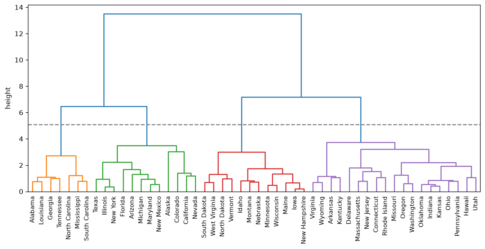
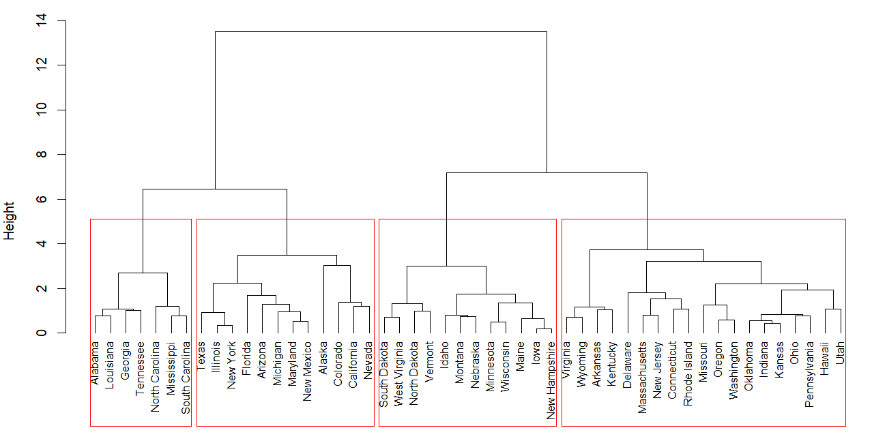

[12주차] 군집 분석과 연관 분석
빅데이터개론
12주차
군집 분석과 연관 분석
2027학년도 「빅데이터개론」의 준비 중인 교재입니다. 편집 상태를 검토하기 위해 미리 공개한 것으로, 수업 전에 내용과 순서가 바뀔 수 있습니다.
학사 14주차 · 교재 12 · 3부 데이터 분석 · ADsP 3과목 데이터분석 > 정형 데이터 마이닝 (군집분석, 연관분석)
군집 분석은 정답이 주어지지 않은 자료에서 비슷한 개체끼리 묶는 방법이고, 연관 분석은 거래 자료에서 함께 나타나는 품목 사이의 규칙을 찾는 방법이다. 둘 다 종속 변수가 없는 비지도 학습이다. 10장 「분류 분석 (1): 데이터 분할, 로지스틱 회귀, 의사결정나무」와 11장 「분류 분석 (2): 앙상블, 인공신경망, 모형 평가」의 분류 분석은 정답을 맞히는 모형을 만들었고, 이 장의 두 방법은 자료 안에 있는 구조를 찾는다. 시험은 거리 측도와 연결법의 구분, 덴드로그램의 판독, k-평균 군집의 절차와 특징, 지지도·신뢰도·향상도의 계산을 묻는다.
군집 분석의 자료는 8장 「다차원 척도법과 주성분 분석」에서 쓴 USArrests다. 8장에서는 변수 넷을 더 적은 수의 주성분으로 줄였고, 이 장에서는 같은 자료의 개체인 50개 주를 비슷한 것끼리 묶는다. 변수(열)를 줄이는 일과 개체(행)를 묶는 일이 두 장의 차이다. 분석은 파이썬으로 실행하고, 장의 끝에서 같은 분석을 R로 실행한 출력을 해석한다. 연관 분석은 작은 장바구니 표에서 세 측도를 손으로 계산하고 파이썬으로 확인한다.
학습 목표
- 군집 분석과 분류 분석의 차이를 설명하고, 거리 측도를 구분하며, 유클리드 거리와 맨해튼 거리를 계산한다.
- 계층적 군집의 연결법을 구분하고, 덴드로그램에서 자르는 높이에 따른 군집 수를 판독한다.
- k-평균 군집의 절차와 장단점을 설명하고, 집단 내 제곱합과 실루엣 계수로 군집 수를 판단한다.
- 혼합 분포 군집과 자기조직화 지도의 원리를 구분한다.
- 연관 규칙의 지지도, 신뢰도, 향상도를 계산하고 해석하며, Apriori 알고리즘이 후보를 줄이는 원리를 설명한다.
준비 사항
| 항목 | 내용 |
|---|---|
| 실습 노트북 | ADsP_12주차_실습_학생용.ipynb. 「따라 하기 1~4」와 「중심 실습」의 절로 나뉜다 |
| 자료 | USArrests.csv. 1973년 미국 50개 주의 범죄 통계다. 연관 분석의 장바구니 표는 노트북 안에서 만든다 |
| 앞 장과의 연계 | 8장의 표준화와 주성분 분석(같은 자료), 10장의 지도 학습과 비지도 학습의 구분, 11장의 인공신경망을 전제로 한다 |
| 실습 환경 | 접속과 자료를 받는 방법은 부록 A에 있다 |
1. 군집 분석과 거리
1.1 군집 분석의 뜻
군집 분석은 개체들을 비슷한 것끼리 몇 개의 집단(군집)으로 나누는 방법이다. 같은 군집 안의 개체끼리는 비슷하고, 다른 군집의 개체와는 다르게 나누는 것이 목표다. 집단의 수와 각 집단의 뜻이 미리 정해져 있지 않다는 점에서 분류 분석과 다르다.
| 구분 | 분류 분석 | 군집 분석 |
|---|---|---|
| 학습의 종류 | 지도 학습 | 비지도 학습 |
| 종속 변수 | 있다. 범주가 미리 정해져 있다 | 없다. 집단이 미리 정해져 있지 않다 |
| 하는 일 | 새 개체가 어느 범주에 속하는지 예측한다 | 비슷한 개체를 묶어 집단을 찾아낸다 |
| 결과의 평가 | 오분류표로 정답과 견준다 | 정답이 없다. 군집이 해석되는지, 방법을 바꾸어도 비슷하게 나오는지를 본다 |
군집의 수와 각 군집의 이름은 분석하는 사람이 결과를 보고 정한다.
1.2 거리 측도
두 개체가 비슷한 정도는 거리로 잰다. 거리가 작을수록 두 개체는 비슷하다. 반대로 유사도는 값이 클수록 비슷하다는 뜻이다. 연속형 변수에 쓰는 거리는 다음과 같다. 오른쪽 끝 열은 R의 dist()에서 그 거리를 고르는 method의 값이다.
| 거리 | 계산 방법 | 특징 | dist()의 method |
|---|---|---|---|
| 유클리드 거리 | 변수별 차이를 제곱하여 더한 뒤 제곱근을 구한다 | 두 점을 잇는 직선의 길이다. 가장 널리 쓴다 | "euclidean"(기본값) |
| 맨해튼 거리 | 변수별 차이의 절댓값을 더한다 | 바둑판 모양의 길을 따라 걷는 거리다 | "manhattan" |
| 민코프스키 거리 | 변수별 차이의 절댓값을 m제곱하여 더한 뒤 m제곱근을 구한다 | m이 1이면 맨해튼 거리, 2이면 유클리드 거리다 | "minkowski" |
| 체비셰프 거리 | 변수별 차이의 절댓값 가운데 가장 큰 값이다 | 가장 많이 다른 변수 하나만 본다 | "maximum" |
| 캔버라 거리 | 변수마다 차이의 절댓값을 두 값의 절댓값의 합으로 나누어 더한다 | 값이 0에 가까운 변수의 차이를 크게 반영한다 | "canberra" |
| 표준화 거리 | 변수별 차이를 그 변수의 표준편차로 나눈 뒤 유클리드 거리를 구한다 | 변수의 단위와 흩어진 정도의 차이를 없앤다 | 없다. 표준화한 자료에 유클리드 거리를 쓴다 |
| 마할라노비스 거리 | 변수의 분산과 변수 사이의 공분산을 함께 반영한다 | 변수끼리 상관이 없으면 표준화 거리와 같다 | 없다. mahalanobis() 함수를 따로 쓴다 |
유클리드, 맨해튼, 민코프스키, 체비셰프, 캔버라 거리는 변수의 흩어진 정도를 고려하지 않는다. 표준화 거리와 마할라노비스 거리는 고려한다.
범주형 자료나 항목의 유무로 된 자료에는 다음 측도를 쓴다.
| 측도 | 계산 방법 | 특징 |
|---|---|---|
| 자카드 유사도 | 두 개체가 가진 항목 집합의 교집합의 크기를 합집합의 크기로 나눈다 | 0에서 1 사이다. 1에서 자카드 유사도를 뺀 값이 자카드 거리다. R의 dist()에서는 method = "binary"가 이 거리다 |
| 코사인 유사도 | 두 벡터의 내적을 두 벡터의 크기의 곱으로 나눈다. 두 벡터가 이루는 각의 코사인이다 | 벡터의 크기가 아니라 방향을 견준다. 방향이 같으면 1이다. 1에서 코사인 유사도를 뺀 값이 코사인 거리다 |
고객 갑이 {공책, 볼펜, 지우개}를 사고 고객 을이 {볼펜, 지우개, 필통}을 샀다고 하자. 교집합은 {볼펜, 지우개}로 2개이고 합집합은 {공책, 볼펜, 지우개, 필통}으로 4개다. 자카드 유사도는 2 ÷ 4 = 0.5이고, 자카드 거리는 1 - 0.5 = 0.5다.
1.3 거리의 계산
두 개체 A(2, 3)과 B(5, 7)의 거리를 구한다. 첫째 변수의 차이는 3이고 둘째 변수의 차이는 4다.
| 거리 | 계산 | 값 |
|---|---|---|
| 유클리드 거리 | 3² + 4² = 25의 제곱근 | 5 |
| 맨해튼 거리 | 3 + 4 | 7 |
| 체비셰프 거리 | 3과 4 가운데 큰 값 | 4 |
같은 두 점이라도 어느 거리를 쓰느냐에 따라 값이 다르다. 맨해튼 거리는 유클리드 거리보다 작지 않고, 유클리드 거리는 체비셰프 거리보다 작지 않다.
USArrests의 열은 넷이다. Murder, Assault, Rape는 인구 10만 명당 살인, 폭행, 강간의 체포 건수이고, UrbanPop은 도시에 사는 인구의 비율(%)이다. 앨라배마와 알래스카의 값과 차이는 다음과 같다.
| 변수 | 앨라배마 | 알래스카 | 차이 | 차이의 제곱 |
|---|---|---|---|---|
Murder |
13.2 | 10.0 | 3.2 | 10.24 |
Assault |
236 | 263 | -27 | 729 |
UrbanPop |
58 | 48 | 10 | 100 |
Rape |
21.2 | 44.5 | -23.3 | 542.89 |
- 유클리드 거리: 10.24 + 729 + 100 + 542.89 = 1382.13의 제곱근이며 약 37.177이다.
- 맨해튼 거리: 3.2 + 27 + 10 + 23.3 = 63.5다.
1.4 표준화
위의 계산에서 제곱의 합 1382.13 가운데 729가 Assault에서 나왔다. Murder의 몫은 10.24뿐이다. Assault의 값이 다른 변수보다 커서 거리를 거의 혼자 정한 것이다. 변수마다 평균과 표준편차를 보면 까닭이 드러난다. Assault의 표준편차는 83.34이고 Murder의 표준편차는 4.36이다. 거리는 단위가 크고 넓게 흩어진 변수에 끌려간다.
그래서 군집 분석을 하기 전에 변수를 표준화한다. 표준화는 변수마다 평균을 빼고 표준편차로 나누는 일이다. 표준화한 변수는 평균이 0이고 표준편차가 1이다. 표준화한 값은 “평균에서 표준편차의 몇 배만큼 떨어져 있는가”를 뜻한다. 이 장의 군집 분석은 모두 표준화한 자료 Z로 한다. 표준화는 표본 표준편차(n - 1로 나눈 값)로 하며, R의 scale()과 같은 값을 낸다.
따라 하기
노트북의 「따라 하기 1. 거리와 표준화」의 셀을 위에서부터 차례로 실행하고 출력을 읽는다.
첫 셀은 자료를 읽고 크기와 앞의 다섯 행을 보여 준다.
(50, 4) Murder Assault UrbanPop Rape State Alabama 13.2 236 58 21.2 Alaska 10.0 263 48 44.5 Arizona 8.1 294 80 31.0 ...- 확인 1 자료의 크기가
(50, 4)로 나왔다. 행이 50개 주이고 열이 변수 넷이다.
- 확인 1 자료의 크기가
기술 통계의 셀에서
std행을 읽는다. 다음은 그 출력의 일부다.Murder Assault UrbanPop Rape mean 7.79 170.76 65.54 21.23 std 4.36 83.34 14.47 9.371.3절의 두 점 A와 B의 거리를 구하는 셀을 실행한다. 출력은 차례로 유클리드 거리, 맨해튼 거리, 체비셰프 거리다.
5.0 7 4- 확인 2 세 거리가 5.0, 7, 4로 나왔고 1.3절의 표와 같다.
앨라배마와 알래스카의 차이의 제곱과 두 거리를 원래 값으로 구한다.
Murder 10.24 Assault 729.00 UrbanPop 100.00 Rape 542.89 dtype: float64 37.177 63.5- 확인 3
Assault의 차이의 제곱이 729.00으로 네 변수 가운데 가장 크고, 유클리드 거리가 37.177로 나왔다.
- 확인 3
표준화한 자료를 만들고 같은 두 주의 거리를 다시 구한다. 표준화한 변수의 표준편차는 모두
1.0으로 나온다.Murder 0.540 Assault 0.105 UrbanPop 0.477 Rape 6.188 dtype: float64 2.704 4.237- 확인 4 표준화한 뒤 차이의 제곱이 가장 큰 변수가
Assault에서Rape(6.188)로 바뀌었고, 유클리드 거리가 2.704, 맨해튼 거리가 4.237로 나왔다.
- 확인 4 표준화한 뒤 차이의 제곱이 가장 큰 변수가
2. 계층적 군집
2.1 병합적 방법과 분할적 방법
계층적 군집은 개체를 한 단계에 하나씩 묶거나 나누어 나무 모양의 구조를 만든다. 방향에 따라 둘로 나뉜다.
| 방법 | 절차 |
|---|---|
| 병합적 방법 | 개체 하나하나를 군집으로 놓고 시작한다. 가장 가까운 두 군집을 하나로 합치는 일을 되풀이하여 전체가 한 군집이 되면 멈춘다 |
| 분할적 방법 | 전체를 한 군집으로 놓고 시작한다. 군집을 둘로 나누는 일을 되풀이하여 개체가 하나씩 남으면 멈춘다 |
흔히 쓰는 것은 병합적 방법이다. 계층적 군집의 특징은 다음과 같다.
- 군집 수를 미리 정하지 않는다. 결과를 그림으로 그려 놓고 정한다.
- 한번 같은 군집으로 묶인 개체는 다시 갈라지지 않는다. 앞 단계에서 잘못 묶여도 뒤에서 바로잡지 못한다.
- 모든 개체 쌍의 거리를 구해야 하므로 개체가 많으면 계산량이 커진다.
2.2 연결법
병합적 방법은 “가장 가까운 두 군집”을 합친다. 개체가 여럿 든 군집 사이의 거리를 어떻게 정하느냐가 연결법이다.
| 연결법 | 두 군집 사이의 거리 | 특징 |
|---|---|---|
| 최단 연결법 (단일 연결법) | 두 군집에서 하나씩 고른 개체 쌍의 거리 가운데 가장 작은 값 | 개체가 사슬처럼 길게 이어진 군집이 생기기 쉽다. 군집의 크기가 고르지 않게 나온다 |
| 최장 연결법 (완전 연결법) | 개체 쌍의 거리 가운데 가장 큰 값 | 군집 안의 개체가 서로 가깝게 모인다. 이상값의 영향을 받는다. R의 hclust()의 기본값이다 |
| 평균 연결법 | 모든 개체 쌍의 거리의 평균 | 최단 연결법과 최장 연결법의 중간 성격이다 |
| 중심 연결법 | 두 군집의 중심(변수별 평균) 사이의 거리 | 군집을 합치면 중심을 개체 수로 가중 평균하여 다시 구한다 |
| 와드 연결법 | 두 군집을 합쳤을 때 군집 내 오차 제곱합이 늘어나는 양 | 그 양이 가장 작은 두 군집을 합친다. 크기가 비슷하고 둥글게 모인 군집이 만들어지는 경향이 있다 |
앞의 넷은 거리에 바탕을 두고, 와드 연결법은 군집 안의 흩어진 정도(오차 제곱합)에 바탕을 둔다.
군집 P = {a, b}와 군집 Q = {c, d}의 거리를 구한다. 개체 쌍의 거리가 a와 c는 2, a와 d는 5, b와 c는 4, b와 d는 7이다.
| 연결법 | 계산 | 값 |
|---|---|---|
| 최단 연결법 | 2, 5, 4, 7 가운데 가장 작은 값 | 2 |
| 최장 연결법 | 2, 5, 4, 7 가운데 가장 큰 값 | 7 |
| 평균 연결법 | (2 + 5 + 4 + 7) ÷ 4 | 4.5 |
같은 자료라도 연결법이 다르면 군집의 크기와 모양이 달라진다. 중심 실습에서 연결법을 바꾸어 확인한다.
2.3 덴드로그램
덴드로그램은 계층적 군집의 병합 과정을 나무 모양으로 그린 그림이다. 다음은 표준화한 USArrests를 와드 연결법으로 묶은 덴드로그램이다.

덴드로그램은 다음과 같이 읽는다.
- 가로축에는 개체(주)가 놓인다. 세로축은 병합이 일어난 높이다. 높이는 그때 합쳐진 두 군집 사이의 거리(연결법이 정한 값)다.
- 두 가지가 가로선으로 이어진 곳이 병합이다. 가로선이 낮을수록 가까운 것끼리 일찍 묶인 것이다.
- 어떤 높이에 가로선을 그으면, 그 선과 만나는 세로선의 수가 군집 수다.
- 병합 높이가 크게 뛰는 구간에서 자르면 서로 멀리 떨어진 군집을 얻는다.
- 가로축에서 이웃해 놓인 두 개체가 반드시 가까운 것은 아니다. 두 개체가 얼마나 가까운지는 처음 이어지는 가로선의 높이로 읽는다.
마지막 다섯 번의 병합 높이는 3.496, 3.734, 6.462, 7.188, 13.516이다. 마지막 병합(군집 2개가 1개로)의 높이가 13.516이고, 그 앞의 병합(3개가 2개로)이 7.188이다. 자르는 높이와 군집 수의 관계는 다음과 같다.
| 자르는 높이 | 군집 수 |
|---|---|
| 7.188과 13.516 사이 | 2 |
| 6.462와 7.188 사이 | 3 |
| 3.734와 6.462 사이 | 4 |
| 3.496과 3.734 사이 | 5 |
높이가 7.188에서 13.516으로 가장 크게 뛰므로 가장 뚜렷한 구분은 군집 2개다. 3.734에서 6.462로도 크게 뛰므로 군집 4개도 자연스러운 선택이다. 그림의 점선은 3.734와 6.462의 가운데인 5.098에 있고 세로선 넷과 만난다.
군집의 번호는 이름표일 뿐이고 크기나 순서의 뜻이 없다. 군집의 성격은 군집별 평균으로 읽는다. 군집을 만들 때에는 표준화한 값을 쓰지만, 해석할 때에는 표준화하기 전의 값으로 평균을 구한다.
따라 하기
노트북의 「따라 하기 2. 계층적 군집과 덴드로그램」의 셀을 차례로 실행한다.
와드 연결법으로 병합 기록을 만들고 마지막 다섯 번의 병합 높이를 본다.
(49, 4) [ 3.496 3.734 6.462 7.188 13.516]- 확인 5 병합 기록이 49줄(
(49, 4))이고, 마지막 병합의 높이가 13.516으로 나왔다.
- 확인 5 병합 기록이 49줄(
가장 먼저 묶인 두 주와 그 높이를 본다.
Iowa New Hampshire 0.206- 확인 6 가장 먼저 묶인 두 주가
Iowa와New Hampshire이고 높이가 0.206으로 나왔다. 덴드로그램에서 이 두 주를 잇는 가로선이 가장 낮은 곳에 있다.
- 확인 6 가장 먼저 묶인 두 주가
군집 4개로 자르는 높이를 구하고 덴드로그램을 그린 뒤,
fcluster로 자른 군집의 크기와 군집별 평균을 본다.5.098 ... hc 1 7 2 12 3 12 4 19 Name: count, dtype: int64 Murder Assault UrbanPop Rape hc 1 14.7 251.3 54.3 21.7 2 11.0 264.0 76.5 33.6 3 3.1 76.0 52.1 11.8 4 6.2 142.1 71.3 19.2- 확인 7 자르는 높이가 5.098이고 네 군집의 크기가 7, 12, 12, 19로 나왔다.
군집의 수 대신 높이 10을 주어 자른다.
1 19 2 31 Name: count, dtype: int64- 확인 8 높이 10에서 자르면 군집이 2개(19개 주, 31개 주)로 나왔다. 10이 7.188과 13.516 사이에 있기 때문이다.
출력의 군집별 평균을 다음과 같이 해석한다.
| 군집 | 주의 수 | 특징 |
|---|---|---|
| 1 | 7 | 살인이 가장 많고(14.7) 도시 인구 비율이 낮다(54.3) |
| 2 | 12 | 폭행(264.0)과 강간(33.6)이 가장 많고 도시 인구 비율이 가장 높다(76.5) |
| 3 | 12 | 세 범죄가 모두 가장 적고 도시 인구 비율도 낮다(52.1) |
| 4 | 19 | 범죄는 전체 평균보다 조금 적고 도시 인구 비율은 높다(71.3) |
3. 비계층적 군집
3.1 k-평균 군집의 절차
k-평균 군집은 군집 수 k를 먼저 정하고, 개체를 가장 가까운 군집의 중심에 배정하는 일을 되풀이한다.
- 초기 중심: 군집의 중심 k개를 임의로 정한다.
- 배정: 개체마다 가장 가까운 중심을 찾아 그 군집에 넣는다.
- 중심 갱신: 군집마다 속한 개체의 평균을 구해 새 중심으로 삼는다.
- 반복: 배정이 더 바뀌지 않을 때까지 2와 3을 되풀이한다.
값 다섯 개(1, 2, 6, 7, 10)를 군집 2개로 나누는 과정을 따라간다. 초기 중심은 1과 2로 놓는다.
| 단계 | 중심 | 배정 |
|---|---|---|
| 처음 | 1, 2 | {1}, {2, 6, 7, 10} |
| 1회 갱신 | 1, 6.25 | {1, 2}, {6, 7, 10} |
| 2회 갱신 | 1.5, 7.667 | {1, 2}, {6, 7, 10} |
처음에는 값 2가 중심 2에 더 가까워 둘째 군집에 들어간다. 중심을 갱신하면 둘째 군집의 중심이 (2 + 6 + 7 + 10) ÷ 4 = 6.25로 옮겨 가고, 값 2는 중심 1에 더 가까워져 첫째 군집으로 옮긴다. 다시 갱신한 뒤에는 배정이 바뀌지 않으므로 멈춘다. 계층적 군집과 달리 개체가 군집을 옮겨 다닌다.
k-평균 군집은 집단 내 제곱합을 줄이는 방법이다. 집단 내 제곱합은 개체마다 자기 군집의 중심까지의 거리를 제곱하여 더한 값이다. 작을수록 개체가 중심 가까이에 모여 있다는 뜻이다. 반복은 언제나 멈추지만, 멈춘 곳이 가장 작은 집단 내 제곱합이라는 보장은 없다(지역 최적해). 그래서 초기 중심을 여러 번 바꾸어 실행하고 가장 좋은 결과를 고른다.
| 장점 | 단점 |
|---|---|
| 절차가 단순하고 계산이 빠르다. 개체가 많은 자료에도 쓸 수 있다 | 군집 수 k를 미리 정해야 한다 |
| 개체가 반복 과정에서 다른 군집으로 옮길 수 있다 | 초기 중심에 따라 결과가 달라질 수 있다 |
| 종속 변수 없이 자료의 구조를 찾는다 | 평균을 쓰므로 이상값에 민감하다 |
| 둥글게 모이지 않은 모양의 군집은 잘 찾지 못한다 |
이상값의 문제에는 평균 대신 중앙값을 쓰는 k-중앙값 군집이나, 실제 개체를 중심으로 쓰는 PAM(k-medoids)을 쓴다.
3.2 k-평균 군집의 결과
표준화한 자료를 군집 4개로 묶으면 군집의 크기는 13, 16, 13, 8이다. 파이썬은 군집의 번호를 0부터 붙인다. 군집의 중심은 표준화한 값의 군집별 평균이다. 0보다 크면 전체 평균보다 크다는 뜻이다.
Murder Assault UrbanPop Rape
0 0.695 1.039 0.723 1.277
1 -0.489 -0.383 0.576 -0.262
2 -0.962 -1.107 -0.930 -0.967
3 1.412 0.874 -0.815 0.0190번 군집은 네 변수가 모두 평균보다 크고, 2번 군집은 모두 평균보다 작다. 3번 군집은 Murder가 1.412로 가장 크고 UrbanPop이 -0.815로 낮다.
집단 내 제곱합은 군집별로 19.922, 16.212, 11.952, 8.316이고 합계는 56.403이다(끝자리는 반올림의 차이). scikit-learn은 이 합계를 inertia_로 준다. 전체 제곱합은 196.0이다. 표준화한 변수는 분산이 1이므로 변수 하나의 제곱합이 50 - 1 = 49이고, 변수가 넷이므로 49 × 4 = 196이다. 전체 제곱합은 집단 내 제곱합과 군집 사이의 제곱합으로 나뉜다. 군집 사이의 제곱합은 196.0 - 56.403 = 139.597이고 전체의 71.2%다. 이 비율이 클수록 군집이 서로 잘 떨어져 있다.
3.3 계층적 군집과의 비교
두 방법이 같은 주를 같은 군집에 넣었는지를 교차표로 본다. 행은 계층적 군집의 번호, 열은 k-평균 군집의 번호다.
km 0 1 2 3
hc
1 0 0 0 7
2 12 0 0 0
3 0 0 12 0
4 1 16 1 1- 두 방법의 번호는 서로 맞지 않는다. 계층적 군집의 1번은 k-평균의 3번과 짝이고, 2번은 0번, 3번은 2번, 4번은 1번과 짝이다.
- 계층적 군집의 1번, 2번, 3번에 속한 31개 주는 k-평균에서도 한 군집에 모여 있다.
- 계층적 군집의 4번에 속한 19개 주 가운데 16개 주는 k-평균의 1번에 있고, 3개 주는 다른 군집으로 흩어졌다.
- 행마다 가장 큰 값을 더하면 7 + 12 + 12 + 16 = 47이다. 50개 주 가운데 47개 주가 두 방법에서 같게 묶였다.
두 방법의 결과가 비슷한 것은 와드 연결법과 k-평균 군집이 모두 군집 안의 제곱합을 작게 하는 쪽으로 묶기 때문이다. 다르게 묶인 3개 주는 군집의 경계에 있는 주다. 군집 분석에는 정답이 없으므로, 방법을 바꾸어도 결과가 비슷하게 나오는지를 이렇게 확인한다. 이 비교가 중심 실습이다.
3.4 군집 수의 결정
k-평균 군집은 군집 수를 미리 정해야 한다. 군집 수를 1에서 8까지 바꾸어 가며 집단 내 제곱합을 구하여 그림으로 그린다.

집단 내 제곱합은 군집 수를 늘리면 언제나 줄어든다. 군집 수가 개체 수와 같아지면 0이 된다. 그러므로 값이 가장 작은 k를 고르는 것이 아니라, 줄어드는 폭이 갑자기 작아지는 곳을 고른다. 그림에서 그 자리가 팔꿈치처럼 꺾여 보인다. 팔꿈치는 눈으로 판단하므로 답이 하나로 정해지지 않을 수 있다.
실루엣 계수는 군집이 잘 나뉘었는지를 개체마다 재는 값이다. 개체 하나에 대해 다음 둘을 구한다.
- a: 같은 군집의 다른 개체들까지의 평균 거리
- b: 가장 가까운 다른 군집의 개체들까지의 평균 거리
실루엣 계수 = (b - a) ÷ (a와 b 가운데 큰 값)이다. -1에서 1 사이의 값을 가진다. 1에 가까우면 자기 군집에는 가깝고 다른 군집과는 멀어 잘 배정된 것이다. 0에 가까우면 두 군집의 경계에 있는 것이고, 음수이면 다른 군집에 더 가까워 잘못 배정되었을 수 있다. 모든 개체의 실루엣 계수를 평균하면 군집 결과 전체를 평가하는 값이 된다. 집단 내 제곱합과 달리 군집 수를 늘린다고 커지지 않으므로, 군집 수가 다른 결과를 견주는 데 쓸 수 있다.
3.5 혼합 분포 군집
혼합 분포 군집은 자료가 k개의 확률 분포가 섞인 모집단에서 나왔다고 가정한다. 분포는 흔히 정규 분포로 놓는다. 분포 하나가 군집 하나에 해당한다. 각 분포의 모수(평균과 분산)와 섞인 비율을 자료에서 추정하고, 개체마다 각 군집에 속할 확률을 구한다.
모수는 EM 알고리즘으로 추정한다. 어느 개체가 어느 분포에서 나왔는지를 모르기 때문에 다음 두 단계를 번갈아 되풀이한다.
| 단계 | 하는 일 |
|---|---|
| E 단계 (기댓값 단계) | 지금의 모수 추정값을 써서, 개체마다 각 분포(군집)에 속할 확률을 계산한다 |
| M 단계 (최대화 단계) | E 단계에서 구한 확률을 써서, 가능도가 가장 커지도록 모수를 다시 추정한다 |
가능도가 더 커지지 않으면 멈춘다. EM 알고리즘도 지역 최적해에서 멈출 수 있으므로 초깃값에 따라 결과가 달라질 수 있다. 두 방법을 견주면 다음과 같다.
| 구분 | k-평균 군집 | 혼합 분포 군집 |
|---|---|---|
| 개체의 배정 | 가장 가까운 중심의 군집 하나에만 넣는다 | 개체마다 각 군집에 속할 확률을 준다 |
| 군집의 모양 | 중심까지의 거리로 정하므로 둥근 모양 | 분포의 분산(공분산)에 따라 길쭉한 모양도 표현한다 |
| 같은 점 | 군집 수를 미리 정한다. 초깃값에 따라 결과가 달라질 수 있다. 이상값에 민감하다 |
혼합 분포 군집은 한 군집에 속하는 개체가 너무 적으면 분산을 추정하기 어렵고, 자료가 크면 수렴하는 데 시간이 걸린다. 군집 수는 정보 기준(BIC 등)을 함께 보고 정한다.
3.6 자기조직화 지도
자기조직화 지도(SOM)는 코호넨(Kohonen)이 제안한 인공신경망의 한 종류이며 비지도 학습이다. 변수가 많은 자료를 낮은 차원(흔히 2차원)의 격자 위에 배치한다. 비슷한 개체는 격자에서 가까운 자리에 놓인다.
| 구성 | 내용 |
|---|---|
| 입력층 | 입력 변수의 수만큼 마디(뉴런)가 있다 |
| 경쟁층 | 마디가 2차원 격자로 놓여 있다. 마디마다 입력과 같은 길이의 연결 강도 벡터를 가진다. 군집은 이 층에 만들어진다 |
학습은 다음과 같이 진행한다.
- 입력 벡터 하나를 넣는다.
- 경쟁층의 마디마다 그 마디의 연결 강도 벡터와 입력 벡터의 거리를 구한다.
- 거리가 가장 짧은 마디가 승자 마디가 된다.
- 승자 마디와 격자에서 그 이웃인 마디의 연결 강도를 입력 벡터에 가깝게 고친다.
- 모든 입력에 대해 되풀이한다. 되풀이할수록 고치는 폭과 이웃의 범위를 줄인다.
11장의 인공신경망과 다른 점은 다음과 같다.
- 정답이 없으므로 출력과 정답의 오차를 계산하지 않고, 역전파 알고리즘을 쓰지 않는다. 입력에서 경쟁층으로 한 방향으로만 계산한다.
- 마디들이 승자가 되려고 경쟁하는 방식(경쟁 학습)으로 학습한다.
- 입력 자료에서 가까운 개체가 지도에서도 가깝게 놓인다. 그래서 결과를 그림으로 보기 좋다.
따라 하기
노트북의 「따라 하기 3. k-평균 군집과 군집 수」의 셀을 차례로 실행한다.
3.1절의 값 다섯 개를 초기 중심 1과 2에서 출발하여 묶는다. 위의 줄은 값마다 배정된 군집의 번호이고 아래는 멈춘 뒤의 중심이다.
[0 0 1 1 1] [[1.5 ] [7.667]]- 확인 9 배정이
[0 0 1 1 1], 중심이 1.5와 7.667로 나왔고 3.1절의 표의 마지막 줄과 같다.
- 확인 9 배정이
표준화한 자료를 군집 4개로 묶어 크기, 중심, 집단 내 제곱합을 본다.
km 0 13 1 16 2 13 3 8 Name: count, dtype: int64 ... 56.403 196.0 71.2- 확인 10 군집의 크기가 13, 16, 13, 8이고, 집단 내 제곱합의 합계가 56.403, 군집 사이 제곱합의 비율이 71.2%로 나왔다.
군집 수를 1에서 8까지 바꾼 집단 내 제곱합과, 군집 수가 하나 늘 때 줄어든 양을 본다.
1 196.00 2 102.86 3 78.36 4 56.40 5 48.97 6 43.24 7 39.80 8 34.66 dtype: float64 1 NaN 2 93.14 3 24.51 4 21.95 5 7.43 6 5.73 7 3.44 8 5.13 dtype: float64- 확인 11 줄어든 양이 93.14, 24.51, 21.95, 7.43, 5.73의 차례로 나왔다. 군집 수 2에서 크게 꺾이고, 4를 지나면 줄어드는 양이 7.43으로 작아진다.
군집 4개일 때의 평균 실루엣 계수를 본다.
0.34- 확인 12 평균 실루엣 계수가 0.34로 나왔다.
첫 값의 NaN은 견줄 앞의 값이 없다는 표시다. 팔꿈치는 2와 4로 읽히며, 2.3절의 덴드로그램에서 병합 높이가 크게 뛰던 곳과 같다.
4. 연관 분석
4.1 연관 분석의 뜻
연관 분석은 거래 자료에서 “어떤 품목을 사면 다른 품목도 산다”는 꼴의 규칙을 찾는 방법이다. 한 고객이 한 번에 산 품목의 묶음을 살피므로 장바구니 분석이라고도 한다. 종속 변수가 없는 비지도 학습이다. 1장에서 빅데이터 활용 기본 테크닉의 하나로 든 연관 규칙 학습이 이것이다.
규칙은 X → Y로 적는다. X를 조건, Y를 결과라 한다. “공책 → 형광펜”은 공책을 산 거래에 형광펜도 들어 있다는 규칙이다. 찾은 규칙은 상품의 진열, 묶음 판매, 추천에 쓴다.
4.2 지지도, 신뢰도, 향상도
규칙이 얼마나 쓸모 있는지는 세 측도로 잰다.
| 측도 | 식 | 뜻 |
|---|---|---|
| 지지도 | X와 Y가 함께 든 거래 수 ÷ 전체 거래 수 | 전체 거래 가운데 두 품목을 함께 산 거래의 비율이다 |
| 신뢰도 | X와 Y가 함께 든 거래 수 ÷ X가 든 거래 수 | X를 산 거래 가운데 Y도 산 거래의 비율이다. 조건부 확률이다 |
| 향상도 | 신뢰도 ÷ (Y가 든 거래 수 ÷ 전체 거래 수) | X를 샀을 때 Y를 살 비율이, 아무 조건 없이 Y를 살 비율의 몇 배인지를 나타낸다 |
향상도는 다음과 같이 해석한다.
| 향상도 | 해석 |
|---|---|
| 1보다 크다 | X를 산 고객은 전체 고객보다 Y를 살 가능성이 높다. 양의 연관이다 |
| 1이다 | X를 사는 것과 Y를 사는 것이 서로 독립이다. 규칙으로서 쓸모가 없다 |
| 1보다 작다 | X를 산 고객은 전체 고객보다 Y를 살 가능성이 낮다. 음의 연관이다 |
어느 문구점의 거래 여섯 건으로 계산한다.
| 거래 | 품목 |
|---|---|
| T1 | 공책, 형광펜, 볼펜 |
| T2 | 공책, 형광펜, 볼펜 |
| T3 | 공책, 형광펜, 지우개 |
| T4 | 공책, 볼펜, 지우개, 필통 |
| T5 | 볼펜, 지우개 |
| T6 | 볼펜, 필통 |
품목이 든 거래의 수는 공책 4건, 형광펜 3건, 볼펜 5건, 지우개 3건, 필통 2건이다. 규칙 “공책 → 형광펜”을 계산한다. 공책과 형광펜이 함께 든 거래는 T1, T2, T3의 3건이다.
- 지지도 = 3 ÷ 6 = 0.5
- 신뢰도 = 3 ÷ 4 = 0.75
- 향상도 = 0.75 ÷ (3 ÷ 6) = 0.75 ÷ 0.5 = 1.5
공책을 산 거래의 75%에 형광펜이 들어 있다. 전체 거래에서 형광펜이 든 비율은 50%이므로, 공책을 산 고객은 전체 고객보다 형광펜을 살 가능성이 1.5배다.
향상도는 지지도로도 계산할 수 있다. 향상도 = X와 Y의 지지도 ÷ (X의 지지도 × Y의 지지도)이다. “공책 → 형광펜”이면 0.5 ÷ (4/6 × 3/6) = 0.5 ÷ 0.333 = 1.5다. 이 꼴에서 X와 Y를 바꾸어도 값이 같다는 것이 드러난다.
4.3 Apriori 알고리즘
품목이 5개이면 품목의 조합(항목 집합)은 31가지다. 품목이 하나 늘 때마다 조합의 수는 두 배쯤으로 늘어난다. 품목이 많으면 모든 조합의 지지도를 계산할 수 없으므로 후보를 줄이는 방법이 필요하다. Apriori 알고리즘은 최소 지지도를 정해 놓고, 지지도가 그 값 이상인 항목 집합만 남긴다. 이렇게 남은 것을 빈발 항목 집합이라 한다.
후보를 줄이는 원리는 하나다. 어떤 항목 집합이 빈발하지 않으면, 그것을 포함하는 더 큰 항목 집합도 빈발하지 않다. {필통}이 든 거래가 적으면 {필통, 볼펜}이 든 거래는 그보다 많을 수 없기 때문이다.
- 최소 지지도를 정한다.
- 품목 1개짜리 항목 집합 가운데 최소 지지도 이상인 것을 찾는다.
- 남은 품목으로 2개짜리 후보를 만들고, 최소 지지도 이상인 것만 남긴다.
- 품목 수를 하나씩 늘리며 더 남는 것이 없을 때까지 되풀이한다.
- 빈발 항목 집합에서 최소 신뢰도 이상인 규칙을 만든다.
4.2절의 거래 여섯 건에 최소 지지도 0.5(3건 이상)를 적용한다.
| 단계 | 후보 | 남는 것 |
|---|---|---|
| 품목 1개 | 공책(4건), 형광펜(3건), 볼펜(5건), 지우개(3건), 필통(2건) | 공책, 형광펜, 볼펜, 지우개. 필통은 빠진다 |
| 품목 2개 | {공책, 형광펜} 3건, {공책, 볼펜} 3건, {공책, 지우개} 2건, {형광펜, 볼펜} 2건, {형광펜, 지우개} 1건, {볼펜, 지우개} 2건 | {공책, 형광펜}, {공책, 볼펜} |
| 품목 3개 | {공책, 형광펜, 볼펜}은 {형광펜, 볼펜}이 빈발하지 않으므로 후보에서 뺀다 | 없다 |
31가지 조합 가운데 지지도를 계산한 것은 11가지다.
Apriori 알고리즘은 후보를 만들고 자료 전체를 다시 읽는 일을 단계마다 되풀이하므로, 품목이 많으면 느리다. FP-Growth 알고리즘은 후보 항목 집합을 만들지 않고, 거래 자료를 FP-트리라는 나무 구조로 줄여 놓은 뒤 거기서 빈발 항목 집합을 찾는다. 자료를 읽는 횟수가 적어 Apriori 알고리즘보다 빠르다.
4.4 장단점과 순차 패턴 분석
| 장점 | 단점 |
|---|---|
| 결과가 “X이면 Y다”의 꼴이어서 이해하기 쉽다 | 품목 수가 늘면 계산량이 급격히 늘어난다 |
| 종속 변수 없이 자료를 탐색할 수 있다 | 거래가 적은 품목은 최소 지지도에 걸려 규칙에서 빠진다 |
| 거래 자료를 그대로 쓴다. 자료를 변환하는 일이 적다 | 품목을 너무 잘게 나누면 뜻 있는 규칙을 찾기 어렵다 |
| 계산이 단순하다 | 연속형 변수는 구간으로 나누어야 쓸 수 있다 |
연관 분석은 한 거래 안에서 함께 산 품목을 본다. 품목을 산 순서는 보지 않는다. 순서를 보는 분석은 순차 패턴 분석이다.
| 구분 | 연관 분석 | 순차 패턴 분석 |
|---|---|---|
| 찾는 것 | 함께 사는 품목 | 시간을 두고 이어서 사는 품목 |
| 규칙의 꼴 | 공책을 사면 형광펜도 산다 | 공책을 산 고객은 나중에 필통을 산다 |
| 필요한 정보 | 거래별 품목 | 거래별 품목에 더하여 고객을 구별하는 정보와 구매 시점 |
따라 하기
먼저 손으로 계산하고, 노트북의 「따라 하기 4. 연관 규칙의 측도」로 확인한다.
4.2절의 거래 여섯 건으로 다음 표의 빈칸을 손으로 채운다. 첫 줄은 본문에서 계산한 것이다.
규칙 함께 든 거래 지지도 신뢰도 향상도 공책 → 형광펜 3건 0.5 0.75 1.5 형광펜 → 공책 공책 → 지우개 공책 → 볼펜 - 확인 13 표를 채웠다. “형광펜 → 공책”의 신뢰도는 1.0, “공책 → 지우개”의 향상도는 1.0, “공책 → 볼펜”의 향상도는 0.9다.
장바구니 표를 만드는 셀과 품목 하나의 지지도를 구하는 셀을 실행한다.
공책 0.667 형광펜 0.500 볼펜 0.833 지우개 0.500 필통 0.333 dtype: float64- 확인 14 필통의 지지도가 0.333으로 최소 지지도 0.5보다 작게 나왔다. 4.3절의 표에서 품목 1개 단계에 필통이 빠진 까닭이다.
품목 둘이 함께 든 거래의 수와, 그것을 거래 수 6으로 나눈 지지도를 본다.
공책 형광펜 볼펜 지우개 필통 공책 4 3 3 2 1 형광펜 3 3 2 1 0 볼펜 3 2 5 2 2 지우개 2 1 2 3 1 필통 1 0 2 1 2- 확인 15 대각선이 아닌 칸에서 지지도가 0.5 이상인 쌍이 {공책, 형광펜}과 {공책, 볼펜}의 둘뿐으로 나왔다. 4.3절의 품목 2개 단계와 같다.
규칙의 측도를 구하는 셀을 실행한다. 출력은 차례로 지지도, 신뢰도, 향상도다.
0.5 0.75 1.5그 셀의
x와y를 바꾸어(예:x = "형광펜",y = "공책") 다시 실행한다.- 확인 16
x와y를 바꾸어 실행한 세 값이 1에서 채운 표의 같은 행과 일치하였다.
- 확인 16
표에서 다음 세 가지를 확인한다.
- 지지도와 향상도는 X와 Y를 바꾸어도 같다. 신뢰도는 다르다. “공책 → 형광펜”의 신뢰도는 0.75이고 “형광펜 → 공책”의 신뢰도는 1.0이다. 신뢰도는 나누는 수가 조건의 거래 수이기 때문이다.
- 향상도가 1이면 독립이다. 지우개는 전체 거래의 50%에 들어 있고, 공책을 산 거래에서도 50%에 들어 있다. 공책을 샀다는 사실이 지우개를 살 가능성을 바꾸지 않는다.
- 신뢰도가 높아도 향상도가 1보다 작을 수 있다. “공책 → 볼펜”의 신뢰도는 0.75로 높다. 그러나 볼펜은 전체 거래의 약 83%에 들어 있는 품목이다. 공책을 산 고객이 볼펜을 살 비율(75%)은 오히려 전체보다 낮다. 그래서 신뢰도만 보지 않고 향상도를 함께 본다.
5. 중심 실습: k-평균 군집과 계층적 군집의 비교
같은 자료를 계층적 군집과 k-평균 군집으로 묶고 두 결과를 견준다. 군집 수와 연결법을 바꾸면 결과가 어떻게 달라지는지를 본다.
준비
- 따라 하기 1~3의 셀을 먼저 실행한다. 중심 실습은 거기서 만든
Z와total을 쓴다. - 「중심 실습」의 첫 코드 셀의
k와method두 줄만 고치고, 그 셀부터 끝까지 다시 실행한다.
절차
단계 1. 계층적 군집
k = 4,method = "ward"인 채로 설정 셀을 실행한다.- 단계 1의 셀을 실행하여 자르는 높이와 군집의 크기를 본다.
- 덴드로그램에서 점선과 만나는 세로선의 수를 센다.
- 확인 17 자르는 높이가 5.098, 군집의 크기가 7, 12, 12, 19로 나왔고, 점선이 세로선 넷과 만난다.
단계 2. k-평균 군집
- 단계 2의 셀을 실행한다.
- 출력의 네 부분(군집의 크기, 집단 내 제곱합의 합계, 군집 사이 제곱합의 비율, 평균 실루엣 계수)을 5절 끝의 표의 첫 줄에 옮겨 적는다.
- 확인 18 출력의 마지막 세 줄이 56.403, 71.2, 0.34로 나왔다.
단계 3. 교차표
- 단계 3의 두 셀을 실행한다. 첫째 셀의 교차표는 3.3절의 표와 같다.
- 교차표의 행마다 가장 큰 값을 찾아 손으로 더하고, 둘째 셀의 출력과 견준다.
- 확인 19 같게 묶인 주의 수가 47로 나왔고, 손으로 더한 7 + 12 + 12 + 16과 같다.
단계 4. 군집의 특징
- 단계 4의 셀을 실행하여 두 방법의 군집별 평균을 견준다.
- 다르게 묶인 주를 찾는 셀을 실행한다.
hc km
State
Arkansas 4 3
Kentucky 4 2
Missouri 4 0- 확인 20 다르게 묶인 주가
Arkansas,Kentucky,Missouri의 셋이고, 모두 계층적 군집의 4번(19개 주)에 속한다. - 확인 21 가장 작은 군집의 평균을 찾았다. 계층적 군집의 1번(7개 주)은
Murder가 14.7, k-평균 군집의 3번(8개 주)은Murder가 13.9다.
단계 5. 군집 수와 연결법의 변경
- 아래 「값을 바꾸어 보기」의 첫째 표를
k를 2, 3, 5로 바꾸어 가며 채운다. - 둘째 표를
method를 바꾸어 가며 채운다. - 마지막에
k = 4,method = "ward"로 되돌리고 설정 셀부터 끝까지 다시 실행한다.
- 확인 22
k를 2로 바꾸었을 때 계층적 군집의 크기가 19, 31로 나왔다. 따라 하기 2에서 높이 10으로 자른 결과와 같다. - 확인 23 되돌려 다시 실행한 뒤 단계 3의 출력이 다시 47로 나왔다.
단계 6. 해석
- 제출할 해석 문장을 쓴다.
k = 4일 때 두 방법의 결과가 얼마나 같은지를 교차표의 수로 쓰고, 가장 작은 군집의 특징을 군집별 평균의 값을 넣어 쓴다.
- 확인 24 문장에 같게 묶인 주의 수(47)와 가장 작은 군집의 평균 두 개 이상이 들어 있다.
값을 바꾸어 보기
군집 수. 연결법은 "ward"로 둔 채 k를 바꾸어 가며 표의 빈칸을 채운다. 첫 줄은 이 교재에 실린 값이다.
k |
자르는 높이 | 계층적 군집의 크기 | k-평균 군집의 크기 | 집단 내 제곱합의 합계 | 군집 사이 제곱합의 비율(%) | 평균 실루엣 계수 | 같게 묶인 주 |
|---|---|---|---|---|---|---|---|
| 4 | 5.098 | 7, 12, 12, 19 | 13, 16, 13, 8 | 56.403 | 71.2 | 0.34 | 47 |
| 2 | |||||||
| 3 | |||||||
| 5 |
k를 늘리면 집단 내 제곱합의 합계와 군집 사이 제곱합의 비율은 각각 어떻게 변하는가. 이 두 값만으로 군집 수를 정할 수 없는 까닭은 무엇인가.- 평균 실루엣 계수가 가장 큰
k는 얼마인가. 2.3절에서 병합 높이가 가장 크게 뛴 곳과 견준다. - 같게 묶인 주의 수가 가장 큰
k는 얼마인가.
연결법. k = 4로 두고 method를 바꾸어 가며 채운다.
method |
자르는 높이 | 계층적 군집의 크기 | 같게 묶인 주 |
|---|---|---|---|
"ward" |
5.098 | 7, 12, 12, 19 | 47 |
"complete" |
|||
"average" |
|||
"single" |
method = "single"일 때 네 군집의 크기는 얼마인가. 덴드로그램의 모양이 와드 연결법일 때와 어떻게 다른지 2.2절의 말로 설명한다.- 네 연결법 가운데 k-평균 군집의 결과와 가장 비슷한 것은 어느 것인가. 그 까닭을 3.3절에서 찾는다. 연결법을 바꾸어도 단계 2의 결과가 바뀌지 않는 까닭도 적는다.
완료 기준
| 번호 | 점검 항목 | 점검 방법 | 기준 값 |
|---|---|---|---|
| 1 | 계층적 군집 | 단계 1의 출력 | 높이 5.098, 크기 7, 12, 12, 19 |
| 2 | k-평균 군집 | 단계 2의 출력 | 56.403, 71.2, 0.34 |
| 3 | 교차표 | 단계 3의 출력과 손 계산 | 같게 묶인 주 47 |
| 4 | 다르게 묶인 주 | 단계 4의 출력 | Arkansas, Kentucky, Missouri |
| 5 | 군집 수의 표 | 「값을 바꾸어 보기」의 첫째 표 | 세 줄 21칸을 모두 채웠다 |
| 6 | 연결법의 표 | 「값을 바꾸어 보기」의 둘째 표 | 세 줄 9칸을 모두 채웠다 |
| 7 | 해석 문장 | 제출한 문장 | 47(또는 다르게 묶인 3개 주)과 가장 작은 군집의 평균값이 들어 있다 |
제출물
- 실행을 마친 노트북.
k = 4,method = "ward"로 되돌려 끝까지 실행한 것을 낸다. - 「값을 바꾸어 보기」의 두 표(빈칸을 채운 것)와 물음 1~5의 답
- 해석 한 문장
6. R 출력 해석
같은 분석을 R로 실행한 코드와 출력이다. R을 실행하지 않고 읽는다.
6.1 대응표
| 하는 일 | 파이썬 | R |
|---|---|---|
| 표준화 | (X - X.mean()) / X.std() |
scale(x) |
| 거리 행렬 | linkage가 안에서 계산한다 |
dist(x). method = "manhattan" 등으로 거리를 바꾼다 |
| 계층적 군집 | linkage(Z, method="ward") |
hclust(d, method = "ward.D2") |
| 덴드로그램 | dendrogram(link) |
plot(hc) |
| 군집의 수로 자르기 | fcluster(link, t=4, criterion="maxclust") |
cutree(hc, k = 4) |
| 높이로 자르기 | fcluster(link, t=10, criterion="distance") |
cutree(hc, h = 10) |
| 덴드로그램에 군집 표시 | color_threshold로 색을 나눈다 |
rect.hclust(hc, k = 4) |
| k-평균 군집 | KMeans(n_clusters=4, n_init=25).fit(Z) |
kmeans(x, centers = 4, nstart = 25) |
| 군집의 번호 | km.labels_ (0부터) |
km$cluster (1부터) |
| 군집의 중심 | km.cluster_centers_ |
km$centers |
| 집단 내 제곱합의 합계 | km.inertia_ |
km$tot.withinss |
| 교차표 | pd.crosstab(a, b) |
table(a, b) |
R에서 USArrests는 따로 읽어 오지 않아도 쓸 수 있는 내장 자료다. hclust()의 method에 적는 연결법의 이름은 "single"(최단), "complete"(최장, 기본값), "average"(평균), "centroid"(중심), "ward.D2"(와드)다. R에는 "ward.D"도 있으나, 와드의 기준을 그대로 구현한 것은 "ward.D2"이고 파이썬의 "ward"와 같은 결과를 낸다.
6.2 같은 일을 하는 R 코드
z <- scale(USArrests) # 표준화한다. 표본 표준편차로 나눈다
hc <- hclust(dist(z), method = "ward.D2") # 유클리드 거리를 구해 와드 연결법으로 묶는다
hc # 군집 결과의 요약
plot(hc, hang = -1) # 덴드로그램을 그린다
rect.hclust(hc, k = 4) # 군집 4개를 네모로 표시한다
g <- cutree(hc, k = 4) # 군집 4개로 자르고 주마다 번호를 붙인다
table(g) # 군집의 크기
head(g, 10) # 앞의 열 개 주의 군집 번호
table(cutree(hc, h = 10)) # 높이 10에서 잘랐을 때 군집의 크기
set.seed(2027) # 난수를 고정한다
km <- kmeans(z, centers = 4, nstart = 25) # k-평균 군집. 초기 중심을 25번 바꾼다
km # 결과
table(hclust = g, kmeans = km$cluster) # 두 결과의 교차표6.3 출력의 해석 (1): hclust(), 덴드로그램, cutree()
Call:
hclust(d = dist(z), method = "ward.D2")
Cluster method : ward.D2
Distance : euclidean
Number of objects: 50 | 묻는 것 | 읽는 자리 | 이 출력의 값 |
|---|---|---|
| 연결법 | Cluster method |
와드 연결법 |
| 거리 측도 | Distance |
유클리드 거리 |
| 개체의 수 | Number of objects |
50 |

2.3절의 파이썬 그림과 같은 나무다. 세로축 Height가 병합 높이이고, rect.hclust가 그린 네모 넷이 군집 넷이다.
g
1 2 3 4
7 12 19 12 cutree의 결과를 table로 센 것이다. 윗줄이 군집의 번호, 아랫줄이 군집의 크기다. 크기는 7, 12, 19, 12로 파이썬의 7, 12, 12, 19와 같고 번호만 다르다.
Alabama Alaska Arizona Arkansas California Colorado
1 2 2 3 2 2
Connecticut Delaware Florida Georgia
3 3 2 1 앞의 열 개 주의 군집 번호다. 이름 아래의 수가 그 주의 군집이다. 첫 주 Alabama가 1번, 처음 나온 다른 군집의 주 Alaska가 2번, 그다음 Arkansas가 3번이다. 이 출력에서 cutree는 자료에 먼저 나오는 개체가 속한 군집부터 1, 2, 3의 번호를 붙였다. 그래서 R의 3번 군집(19개 주)이 파이썬의 4번 군집이다. 군집의 번호에는 뜻이 없으므로 크기와 구성으로 짝을 맞춘다.
1 2
19 31 cutree(hc, h = 10)의 결과다. 높이 10에서 자르면 군집이 2개이고 크기는 19와 31이다. 따라 하기 2의 파이썬 출력과 같다.
6.4 출력의 해석 (2): kmeans()
K-means clustering with 4 clusters of sizes 13, 13, 16, 8
Cluster means:
Murder Assault UrbanPop Rape
1 -0.9615407 -1.1066010 -0.9301069 -0.96676331
2 0.6950701 1.0394414 0.7226370 1.27693964
3 -0.4894375 -0.3826001 0.5758298 -0.26165379
4 1.4118898 0.8743346 -0.8145211 0.01927104
Clustering vector:
Alabama Alaska Arizona Arkansas California
4 2 2 4 2
Colorado Connecticut Delaware Florida Georgia
2 3 3 2 4
...
Within cluster sum of squares by cluster:
[1] 11.952463 19.922437 16.212213 8.316061
(between_SS / total_SS = 71.2 %)
Available components:
[1] "cluster" "centers" "totss" "withinss" "tot.withinss"
[6] "betweenss" "size" "iter" "ifault" 출력은 위에서부터 다섯 부분이다.
- 첫 줄: 군집의 수와 크기다.
Cluster means: 군집의 중심이다. 행이 군집, 열이 변수다.Clustering vector: 개체마다 배정된 군집의 번호다. 여기서는 앞의 열 개 주만 실었다.Within cluster sum of squares by cluster: 군집별 집단 내 제곱합과, 전체 제곱합 가운데 군집 사이의 제곱합이 차지하는 비율(between_SS / total_SS)이다.Available components:km$size처럼$뒤에 적어 꺼낼 수 있는 값의 이름이다.totss는 전체 제곱합,tot.withinss는 집단 내 제곱합의 합계,betweenss는 군집 사이의 제곱합이다.
시험이 묻는 값은 다음 자리에 있다.
| 묻는 것 | 읽는 자리 | 이 출력의 값 |
|---|---|---|
| 군집의 수와 크기 | 첫 줄 | 4개. 13, 13, 16, 8 |
| 군집의 특징 | Cluster means의 행 |
1번 군집은 네 변수가 모두 평균보다 작다. 2번 군집은 모두 평균보다 크다 |
| 어느 개체가 어느 군집인가 | Clustering vector |
앨라배마는 4번, 캘리포니아는 2번 군집이다 |
| 개체가 가장 촘촘하게 모인 군집 | 집단 내 제곱합이 가장 작은 군집 | 4번 군집(8.316061). 다만 크기가 8로 가장 작은 군집이기도 하다 |
| 군집이 잘 나뉜 정도 | between_SS / total_SS |
71.2%. 클수록 군집 사이가 멀고 군집 안이 촘촘하다 |
| 집단 내 제곱합의 합계 | 군집별 값을 더한다. tot.withinss |
11.952463 + 19.922437 + 16.212213 + 8.316061 = 56.403174 |
파이썬의 결과와 견주면 군집의 크기와 집단 내 제곱합, 합계 56.403, 비율 71.2%가 같고 번호만 다르다. 파이썬의 0, 1, 2, 3번이 R의 2, 3, 1, 4번이다. 크기가 13인 군집이 둘이므로 크기만으로는 짝을 정할 수 없고 집단 내 제곱합이나 중심으로 짝을 맞춘다.
군집 수가 4가 아닐 때에는 두 언어의 값이 조금 다를 수 있다. 군집 수가 3일 때 집단 내 제곱합의 합계는 R에서 78.32이고 파이썬에서 78.36이다. R의 kmeans()는 기본으로 하티건-웡(Hartigan-Wong) 알고리즘을 쓰고, scikit-learn의 KMeans는 로이드(Lloyd) 방식의 알고리즘을 쓴다. 알고리즘과 초기 중심이 달라 서로 다른 지역 최적해에서 멈춘 것이다.
6.5 출력의 해석 (3): 교차표
kmeans
hclust 1 2 3 4
1 0 0 0 7
2 0 12 0 0
3 1 1 16 1
4 12 0 0 0행이 계층적 군집, 열이 k-평균 군집이다. 3.3절의 파이썬 교차표와 번호만 다르고 내용은 같다. 계층적 군집의 3번(19개 주) 가운데 16개 주가 k-평균의 3번에 있고 3개 주가 흩어졌다. 행마다 가장 큰 값을 더하면 7 + 12 + 16 + 12 = 47이다.
6.6 연관 규칙의 R 코드
R에서 연관 규칙은 arules 패키지로 찾는다. 이 교재를 쓴 환경에는 arules 패키지가 없어 출력은 싣지 않고, 코드와 출력에 나오는 열의 뜻만 싣는다.
library(arules) # 연관 규칙 패키지를 불러온다
tr <- read.transactions("basket.csv", format = "basket", sep = ",") # 한 줄이 거래 하나인 파일을 읽는다
rules <- apriori(tr, parameter = list(support = 0.5, confidence = 0.7)) # 최소 지지도와 최소 신뢰도를 준다
inspect(sort(rules, by = "lift")) # 규칙을 향상도가 큰 순서로 본다apriori()가 Apriori 알고리즘으로 규칙을 찾고, inspect()가 규칙을 한 줄에 하나씩 보여 준다. parameter를 주지 않으면 최소 지지도 0.1, 최소 신뢰도 0.8을 쓴다. inspect()의 출력에 나오는 열은 다음과 같다.
| 열 | 뜻 |
|---|---|
lhs |
규칙의 왼쪽(left-hand side). 조건 X다. 품목 집합을 { }로 적는다 |
rhs |
규칙의 오른쪽(right-hand side). 결과 Y다. lhs와 rhs 사이에 =>가 놓인다 |
support |
지지도. X와 Y가 함께 든 거래의 비율 |
confidence |
신뢰도 |
coverage |
조건 X가 든 거래의 비율. X의 지지도와 같다 |
lift |
향상도 |
count |
X와 Y가 함께 든 거래의 수. support에 전체 거래 수를 곱한 값이다 |
4.2절의 표에서 “형광펜 → 공책”은 lhs가 {형광펜}, rhs가 {공책}, support가 0.5, confidence가 1.0, coverage가 0.5, lift가 1.5, count가 3인 줄에 해당한다. 세 측도 사이에는 confidence = support ÷ coverage의 관계가 있다.
7. 자주 하는 실수와 오해
| 증상 또는 오해 | 원인 | 바로잡기 |
|---|---|---|
NameError: name 'Z' is not defined가 난다 |
중심 실습의 셀을 따라 하기 1보다 먼저 실행하였다 | 노트북을 위에서부터 실행한다. 중심 실습은 따라 하기 1과 3에서 만든 Z와 total을 쓴다 |
k를 바꾸었는데 교차표가 그대로다 |
설정 셀만 실행하고 아래 셀을 다시 실행하지 않았다 | 설정 셀부터 끝까지 다시 실행한다 |
| 군집 번호가 다르면 다른 결과라고 생각한다 | 번호를 군집의 뜻으로 읽었다 | 번호는 이름표다. 교차표의 한 행이 한 열에 몰려 있으면 같은 군집이다 |
| 집단 내 제곱합이 가장 작은 k를 고른다 | k를 늘리면 언제나 줄어든다는 점을 놓쳤다 | 줄어드는 폭이 작아지는 곳(팔꿈치)을 보거나 실루엣 계수를 함께 본다 |
| 신뢰도가 높으면 좋은 규칙이라고 생각한다 | 결과 품목이 원래 많이 팔리면 신뢰도가 저절로 높다 | 향상도를 함께 본다(“공책 → 볼펜”의 향상도 0.9) |
| 신뢰도를 계산할 때 결과 품목의 거래 수로 나눈다 | 신뢰도의 방향을 바꾸었다 | 나누는 수는 조건(화살표의 왼쪽)이 든 거래 수다 |
| 향상도가 1보다 작으면 쓸모없는 규칙이라고 생각한다 | 독립과 음의 연관을 혼동하였다 | 쓸모없는 것은 1일 때다. 1보다 작으면 함께 사지 않는 경향이라는 정보다 |
8. 정리
| 주제 | 기억할 것 |
|---|---|
| 군집 분석 | 비지도 학습. 종속 변수 없이 비슷한 개체를 묶는다. 분류 분석은 정답이 있는 지도 학습이다 |
| 거리 측도 | 유클리드(제곱합의 제곱근), 맨해튼(절댓값의 합), 민코프스키(m이 1이면 맨해튼, 2이면 유클리드), 체비셰프(최댓값), 캔버라, 표준화 거리와 마할라노비스(흩어진 정도를 고려. 마할라노비스는 상관도 고려) |
| 범주형 자료의 측도 | 자카드 유사도(교집합 ÷ 합집합), 코사인 유사도(방향) |
| 표준화 | 단위가 큰 변수가 거리를 정하지 않도록, 군집 분석 전에 평균을 빼고 표준편차로 나눈다 |
| 계층적 군집 | 병합적 방법과 분할적 방법. 군집 수를 미리 정하지 않는다. 한번 묶인 개체는 갈라지지 않는다 |
| 연결법 | 최단(최솟값, 사슬 모양), 최장(최댓값), 평균, 중심, 와드(오차 제곱합의 증가량) |
| 덴드로그램 | 세로축은 병합 높이. 가로선을 그어 만나는 세로선의 수가 군집 수다 |
| k-평균 군집 | 초기 중심 → 배정 → 중심 갱신 → 반복. k를 미리 정한다. 초깃값과 이상값에 민감하다 |
| 군집 수의 결정 | 집단 내 제곱합이 줄어드는 폭이 작아지는 곳(팔꿈치). 실루엣 계수는 1에 가까울수록 좋다 |
| 혼합 분포 군집 | 확률 분포의 혼합으로 본다. EM 알고리즘의 E 단계는 속할 확률을 계산하고, M 단계는 모수를 다시 추정한다 |
| 자기조직화 지도 | 입력층과 경쟁층. 가장 가까운 마디가 승자다. 승자와 이웃의 연결 강도를 고친다. 역전파를 쓰지 않는다 |
| 연관 규칙의 측도 | 지지도 = 함께 든 거래 ÷ 전체, 신뢰도 = 함께 든 거래 ÷ X가 든 거래, 향상도 = 신뢰도 ÷ Y의 비율 |
| 향상도의 해석 | 1보다 크면 양의 연관, 1이면 독립, 1보다 작으면 음의 연관 |
| Apriori 알고리즘 | 최소 지지도 이상인 빈발 항목 집합만 남긴다. 빈발하지 않은 집합을 포함하는 집합은 세지 않는다 |
| 순차 패턴 분석 | 구매의 순서를 본다. 고객을 구별하는 정보와 구매 시점이 필요하다 |
9. 참고 자료
주간 문항 세트 12
20문항이다. 1~10번은 수업에서 풀고 11~20번은 과제로 푼다. 1~15번은 이 장의 문항이고 16~20번은 앞 장의 복습이다. 실전의 문항당 시간으로는 36분이 걸린다. 정답과 풀이는 세트 뒤에 있다.
문항 1. 군집 분석에 대한 설명으로 가장 적절하지 않은 것은?
- ① 종속 변수가 없는 자료에 쓰는 비지도 학습이다.
- ② 같은 군집의 개체끼리는 비슷하고 다른 군집의 개체와는 다르게 묶는 것을 목표로 한다.
- ③ 개체 사이의 거리나 유사도를 기준으로 삼는다.
- ④ 미리 정해진 범주 가운데 새 개체가 속할 범주를 예측한다.
범위: 데이터분석 > 정형 데이터 마이닝 > 군집분석 유형: 옳지 않은 것 고르기 장: 12
문항 2. 두 개체 P(1, 2)와 Q(7, 10)의 유클리드 거리와 맨해튼 거리를 바르게 짝지은 것은?
- ① 유클리드 거리 8, 맨해튼 거리 10
- ② 유클리드 거리 10, 맨해튼 거리 14
- ③ 유클리드 거리 14, 맨해튼 거리 10
- ④ 유클리드 거리 100, 맨해튼 거리 14
범위: 데이터분석 > 정형 데이터 마이닝 > 군집분석 유형: 계산 장: 12
문항 3. 다음은 개체 다섯 개(A~E)의 맨해튼 거리를 R의 dist()로 구한 출력이다. 계층적 군집의 처음 두 단계에서 A와 B가 묶이고 C와 D가 묶였다. 최단 연결법으로 잰 군집 {A, B}와 군집 {C, D} 사이의 거리는?
A B C D
B 1
C 7 6
D 10 9 3
E 4 5 5 6- ① 6
- ② 8
- ③ 9
- ④ 10
범위: 데이터분석 > 정형 데이터 마이닝 > 군집분석 유형: 출력 해석 장: 12
문항 4. 다음은 자동차 10종의 연비, 마력, 무게를 표준화한 뒤 최장 연결법으로 계층적 군집을 실행하고 R로 그린 덴드로그램이다. 이에 대한 설명으로 가장 적절하지 않은 것은?

- ① 높이 2에서 자르면 군집은 3개다.
- ② 군집을 2개로 나누면 한 군집에는
Duster 360과Cadillac Fleetwood두 종만 들어간다. - ③ 높이 1.5에서 자르면
Duster 360과Cadillac Fleetwood는 같은 군집에 속한다. - ④
Honda Civic은Fiat 128과Toyota Corolla가 먼저 묶인 군집에 합쳐진다.
범위: 데이터분석 > 정형 데이터 마이닝 > 군집분석 유형: 출력 해석 장: 12
문항 5. k-평균 군집에 대한 설명으로 가장 적절하지 않은 것은?
- ① 군집 수 k를 분석하기 전에 정해야 한다.
- ② 초기 중심을 어떻게 잡느냐에 따라 결과가 달라질 수 있다.
- ③ 한번 군집에 배정된 개체는 반복 과정에서 다른 군집으로 옮기지 않는다.
- ④ 군집의 중심으로 평균을 쓰므로 이상값의 영향을 크게 받는다.
범위: 데이터분석 > 정형 데이터 마이닝 > 군집분석 유형: 옳지 않은 것 고르기 장: 12
문항 6. 다음은 붓꽃 150송이의 네 변수를 표준화한 뒤 k-평균 군집을 R로 실행한 출력의 일부다. 이에 대한 설명으로 가장 적절하지 않은 것은?
K-means clustering with 3 clusters of sizes 50, 53, 47
Cluster means:
Sepal.Length Sepal.Width Petal.Length Petal.Width
1 -1.01119138 0.85041372 -1.3006301 -1.2507035
2 -0.05005221 -0.88042696 0.3465767 0.2805873
3 1.13217737 0.08812645 0.9928284 1.0141287
...
Within cluster sum of squares by cluster:
[1] 47.35062 44.08754 47.45019
(between_SS / total_SS = 76.7 %)- ① 군집은 3개이고 가장 큰 군집에는 개체 53개가 들어 있다.
- ② 전체 제곱합 가운데 군집 사이의 제곱합이 차지하는 비율은 76.7%다.
- ③ 1번 군집은
Petal.Length의 평균이 전체 평균보다 작다. - ④ 집단 내 제곱합이 가장 큰 군집은 2번 군집이다.
범위: 데이터분석 > 정형 데이터 마이닝 > 군집분석 유형: 출력 해석 장: 12
문항 7. 다음은 어느 분식점의 거래 다섯 건이다. 규칙 “김밥 → 라면”의 지지도는?
| 거래 | 품목 |
|---|---|
| 1 | 김밥, 라면 |
| 2 | 김밥, 음료 |
| 3 | 김밥, 라면, 음료 |
| 4 | 김밥, 과자 |
| 5 | 라면, 음료 |
- ① 0.4
- ② 0.5
- ③ 0.6
- ④ 0.8
범위: 데이터분석 > 정형 데이터 마이닝 > 연관분석 유형: 계산 장: 12
문항 8. 문항 7의 거래 자료에서 규칙 “라면 → 김밥”의 신뢰도로 가장 가까운 것은?
- ① 0.40
- ② 0.50
- ③ 0.67
- ④ 0.80
범위: 데이터분석 > 정형 데이터 마이닝 > 연관분석 유형: 계산 장: 12
문항 9. 전체 거래 200건 가운데 샐러드가 든 거래가 80건, 생수가 든 거래가 50건, 샐러드와 생수가 함께 든 거래가 40건이다. 규칙 “샐러드 → 생수”의 향상도와 그 해석으로 가장 적절한 것은?
- ① 0.25이고, 샐러드를 산 고객은 전체 고객보다 생수를 살 가능성이 낮다.
- ② 0.5이고, 샐러드를 사는 것과 생수를 사는 것은 서로 독립이다.
- ③ 1.0이고, 샐러드를 사는 것과 생수를 사는 것은 서로 독립이다.
- ④ 2.0이고, 샐러드를 산 고객은 전체 고객보다 생수를 살 가능성이 2배다.
범위: 데이터분석 > 정형 데이터 마이닝 > 연관분석 유형: 계산 장: 12
문항 10. Apriori 알고리즘에 대한 설명으로 가장 적절한 것은?
- ① 모든 품목 조합의 지지도를 빠짐없이 계산한 뒤에 규칙을 만든다.
- ② 최소 지지도에 못 미치는 항목 집합을 포함하는 더 큰 항목 집합은 후보에서 뺀다.
- ③ 후보 항목 집합을 만들지 않고 나무 구조에서 빈발 항목 집합을 찾는다.
- ④ 품목을 산 순서를 고려하여 규칙을 만든다.
범위: 데이터분석 > 정형 데이터 마이닝 > 연관분석 유형: 용어 구분 장: 12
문항 11. 변수의 분산뿐 아니라 변수 사이의 상관(공분산)까지 반영하여 계산하는 거리는?
- ① 맨해튼 거리
- ② 체비셰프 거리
- ③ 마할라노비스 거리
- ④ 캔버라 거리
범위: 데이터분석 > 정형 데이터 마이닝 > 군집분석 유형: 용어 구분 장: 12
문항 12. 어느 자료에 k-평균 군집을 군집 수를 바꾸어 가며 실행하여 다음 표를 얻었다. 집단 내 제곱합의 팔꿈치를 기준으로 할 때 가장 적절한 군집 수는?
| 군집 수 | 1 | 2 | 3 | 4 | 5 | 6 |
|---|---|---|---|---|---|---|
| 집단 내 제곱합 | 300 | 160 | 70 | 62 | 57 | 54 |
- ① 2
- ② 3
- ③ 5
- ④ 6
범위: 데이터분석 > 정형 데이터 마이닝 > 군집분석 유형: 사례 판단 장: 12
문항 13. 혼합 분포 군집에서 쓰는 EM 알고리즘의 E 단계에서 하는 일로 가장 적절한 것은?
- ① 지금의 모수 추정값으로 개체마다 각 군집에 속할 확률을 계산한다.
- ② 가능도가 가장 커지도록 각 분포의 평균과 분산을 다시 추정한다.
- ③ 거리가 가장 가까운 두 군집을 찾아 하나로 합친다.
- ④ 승자 마디와 그 이웃 마디의 연결 강도를 입력 벡터에 가깝게 고친다.
범위: 데이터분석 > 정형 데이터 마이닝 > 군집분석 유형: 용어 구분 장: 12
문항 14. 자기조직화 지도(SOM)에 대한 설명으로 가장 적절하지 않은 것은?
- ① 입력층과 경쟁층의 두 층으로 이루어진다.
- ② 입력 벡터와 가장 가까운 경쟁층의 마디를 승자로 정한다.
- ③ 변수가 많은 자료를 낮은 차원의 격자 위에 배치하므로 결과를 그림으로 보기 좋다.
- ④ 출력값과 정답의 오차를 역전파하여 연결 강도를 고친다.
범위: 데이터분석 > 정형 데이터 마이닝 > 군집분석 유형: 옳지 않은 것 고르기 장: 12
문항 15. 어느 온라인 서점이 “입문서를 산 고객은 석 달 안에 문제집을 산다”와 같은 규칙을 찾으려고 한다. 이 분석에 대한 설명으로 가장 적절한 것은?
- ① 한 거래 안에서 함께 산 품목만 보면 되므로 거래별 품목 자료만 있으면 된다.
- ② 구매의 순서를 보는 순차 패턴 분석이며, 고객을 구별하는 정보와 구매 시점이 필요하다.
- ③ 종속 변수가 있는 지도 학습이므로 오분류표로 평가한다.
- ④ 품목 사이의 거리를 구해 덴드로그램을 그리는 계층적 군집이다.
범위: 데이터분석 > 정형 데이터 마이닝 > 연관분석 유형: 사례 판단 장: 12
문항 16. 어느 공공 도서관이 새로 가입한 회원이 미리 나누어 둔 ‘자주 이용할 회원’과 ’드물게 이용할 회원’ 가운데 어느 쪽에 속하는지를 가입 정보로 가리려고 한다. 빅데이터 활용 기본 테크닉 가운데 이 일에 해당하는 것은?
- ① 유형 분석
- ② 연관 규칙 학습
- ③ 유전 알고리즘
- ④ 감정 분석
범위: 데이터 이해 > 데이터의 가치와 미래 > 비즈니스 모델 유형: 사례 판단 장: 1
문항 17. 분석 과제를 관리할 때, 모형을 복잡하게 만들수록 정확도는 오르지만 결과를 해석하기 어려워지므로 둘 사이의 기준을 정해 두어야 한다. 분석 과제의 관리 영역 가운데 이 일에 해당하는 것은?
- ① 분석 복잡도
- ② 데이터 크기
- ③ 데이터 복잡도
- ④ 속도
범위: 데이터분석 기획 > 데이터분석 기획의 이해 > 분석 프로젝트 관리 방안 유형: 용어 구분 장: 2
문항 18. 데이터 거버넌스의 구성 요소 세 가지를 바르게 나열한 것은?
- ① 규모, 다양성, 속도
- ② 업무 이해, 데이터 이해, 모델링
- ③ 시급성, 난이도, 전략적 중요도
- ④ 원칙, 조직, 프로세스
범위: 데이터분석 기획 > 분석 마스터 플랜 > 분석 거버넌스 체계 수립 유형: 용어 구분 장: 3
문항 19. 독립 변수가 x1과 x2 둘인 회귀 분석에서 F 통계량의 유의 확률이 0.002, x1 계수의 유의 확률이 0.310, x2 계수의 유의 확률이 0.004였다. 유의수준 0.05에서의 해석으로 가장 적절한 것은?
- ① 모형은 유의하지 않고 두 계수는 모두 유의하다.
- ② 모형은 유의하고, x2의 계수는 유의하나 x1의 계수는 유의하지 않다.
- ③ 모형은 유의하고 두 계수도 모두 유의하다.
- ④ x1의 유의 확률이 더 크므로 x1이 종속 변수에 더 큰 영향을 준다.
범위: 데이터분석 > 통계분석 > 기초 통계분석 유형: 사례 판단 장: 7
문항 20. 다음은 어느 분류 모형의 오분류표다. 행은 실제 범주, 열은 예측한 범주다. 이 모형의 재현율(민감도)은?
| 예측: 양성 | 예측: 음성 | |
|---|---|---|
| 실제: 양성 | 40 | 10 |
| 실제: 음성 | 20 | 30 |
- ① 0.60
- ② 0.67
- ③ 0.70
- ④ 0.80
범위: 데이터분석 > 정형 데이터 마이닝 > 분류분석 유형: 계산 장: 11
정답
| 문항 | 1 | 2 | 3 | 4 | 5 | 6 | 7 | 8 | 9 | 10 |
|---|---|---|---|---|---|---|---|---|---|---|
| 정답 | ④ | ② | ① | ③ | ③ | ④ | ① | ③ | ④ | ② |
| 문항 | 11 | 12 | 13 | 14 | 15 | 16 | 17 | 18 | 19 | 20 |
|---|---|---|---|---|---|---|---|---|---|---|
| 정답 | ③ | ② | ① | ④ | ② | ① | ① | ④ | ② | ④ |
풀이
- ④. 미리 정해진 범주를 예측하는 것은 분류 분석이다. 군집 분석에는 정해진 범주가 없다. (1.1절)
- ②. 변수별 차이는 6과 8이다. 유클리드 거리는 36 + 64 = 100의 제곱근인 10이고, 맨해튼 거리는 6 + 8 = 14다. ④는 제곱근을 구하지 않은 값이다. (1.3절)
- ①. 두 군집에서 하나씩 고른 쌍의 거리는 A와 C가 7, A와 D가 10, B와 C가 6, B와 D가 9다. 최단 연결법은 가장 작은 값인 6을 쓴다. ②는 평균 연결법의 값 (7 + 10 + 6 + 9) ÷ 4 = 8이고, ④는 최장 연결법의 값이다. (2.2절)
- ③.
Duster 360과Cadillac Fleetwood는 높이 1.774에서 묶인다. 높이 1.5에서는 아직 묶이지 않았으므로 서로 다른 군집이다. ①은 높이 2의 가로선이 세로선 셋과 만난다. ②는 맨 위의 병합에서 갈라지는 한쪽 가지에 두 종만 있다. (2.3절, 6.3절) - ③. k-평균 군집에서는 중심을 갱신할 때마다 개체를 다시 배정하므로 개체가 군집을 옮길 수 있다. 한번 묶이면 갈라지지 않는 것은 계층적 군집이다. (2.1절, 3.1절)
- ④. 집단 내 제곱합은 차례로 47.35062, 44.08754, 47.45019다. 가장 큰 군집은 3번이고 2번은 가장 작다. ③은 표준화한 자료이므로 중심이 음수(-1.3006301)이면 전체 평균보다 작다는 뜻이다. (6.4절)
- ①. 김밥과 라면이 함께 든 거래는 1번과 3번의 2건이다. 지지도 = 2 ÷ 5 = 0.4. ②는 “김밥 → 라면”의 신뢰도 2 ÷ 4다. (4.2절)
- ③. 라면이 든 거래는 1번, 3번, 5번의 3건이고, 그 가운데 김밥도 든 거래는 2건이다. 신뢰도 = 2 ÷ 3 ≈ 0.67. ②는 방향이 반대인 “김밥 → 라면”의 신뢰도다. (4.2절)
- ④. 신뢰도 = 40 ÷ 80 = 0.5. 생수가 든 거래의 비율 = 50 ÷ 200 = 0.25. 향상도 = 0.5 ÷ 0.25 = 2.0. 1보다 크므로 양의 연관이다. ②의 0.5는 신뢰도이고, 독립인 것은 향상도가 1일 때다. (4.2절)
- ②. 빈발하지 않은 항목 집합을 포함하는 집합은 빈발할 수 없다는 원리로 후보를 줄인다. ①은 Apriori 알고리즘이 피하려는 일이다. ③은 FP-Growth 알고리즘, ④는 순차 패턴 분석이다. (4.3절, 4.4절)
- ③. 마할라노비스 거리는 변수의 분산과 변수 사이의 공분산을 함께 반영한다. 나머지 셋은 변수의 흩어진 정도를 고려하지 않는다. (1.2절)
- ②. 줄어든 양은 차례로 140, 90, 8, 5, 3이다. 군집 수 3을 지나면 줄어드는 양이 갑자기 작아진다. 집단 내 제곱합이 가장 작은 6을 고르는 것이 아니다. (3.4절)
- ①. E 단계는 속할 확률을 계산하고, M 단계는 모수를 다시 추정한다(②). ③은 병합적 계층 군집, ④는 자기조직화 지도의 학습이다. (3.5절)
- ④. 자기조직화 지도는 정답이 없는 비지도 학습이어서 출력과 정답의 오차를 계산하지 않고 역전파를 쓰지 않는다. (3.6절)
- ②. “산 뒤에 산다”는 시간의 순서를 보는 규칙이므로 순차 패턴 분석이다. 누가 언제 샀는지를 알아야 한다. ①은 순서를 보지 않는 연관 분석의 설명이다. (4.4절)
- ①. 새로운 대상이 미리 정해 둔 집단 가운데 어디에 속하는지 가리는 것은 유형 분석이다. 연관 규칙 학습은 함께 나타나는 항목의 관계를 찾고, 유전 알고리즘은 해결안을 섞고 바꾸어 최적의 안을 찾으며, 감정 분석은 글의 긍정과 부정을 가린다. (교재 01의 3.5절)
- ①. 모형의 복잡함과 해석의 쉬움 사이에서 기준을 정하는 것은 분석 복잡도의 관리다. 데이터 크기는 분석할 데이터의 양, 데이터 복잡도는 데이터의 유형과 출처의 다양함, 속도는 결과를 내고 활용하는 속도를 관리한다. (교재 02의 4.1절)
- ④. 데이터 거버넌스의 구성 요소는 원칙, 조직, 프로세스다. ①은 빅데이터의 3V, ②는 CRISP-DM의 단계 일부, ③은 분석 과제의 우선순위를 평가하는 기준에 쓰는 말이다. (교재 03의 3.1절)
- ②. F 통계량의 유의 확률 0.002가 0.05보다 작으므로 모형은 유의하다. x2의 0.004는 0.05보다 작고 x1의 0.310은 크다. ④는 유의 확률의 크기를 영향의 크기로 잘못 읽은 것이다. (교재 07의 2.3절)
- ④. 재현율은 실제 양성 가운데 양성으로 예측한 비율이다. 40 ÷ (40 + 10) = 0.80. ①은 특이도 30 ÷ 50, ②는 정밀도 40 ÷ 60, ③은 정분류율 70 ÷ 100이다. (교재 11의 4.2절)